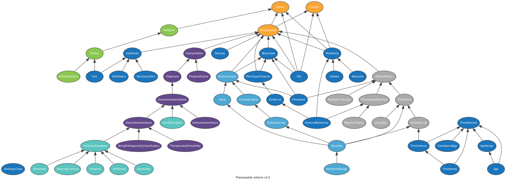

GA4GH Phenopackets
The Phenopacket schema, developed by the Global Alliance for Genomics and Health (GA4GH), is an open standard designed to facilitate the exchange of detailed phenotypic and genomic data. It is particularly useful for capturing rich clinical data and complex phenotypes in a structured format, making it ideal for rare disease (RD) research. The schema enables the precise description of a patient’s clinical features, genetic information, diagnoses, and disease progression, all of which are critical for understanding rare diseases. Phenopackets are widely adopted in bioinformatics pipelines to ensure the standardization of data across different institutions and studies, enhancing data reusability and interoperability.
Tip
- Read the GA4GH Phenopacket Schema Paper here:
The GA4GH Phenopacket schema defines a computable representation of clinical data
Phenopacket Building Blocks
The GA4GH Phenopcaket Schema v2.0:
{kind=link}
A Phenopacket characterizes an individual or biosample, linking it to detailed phenotypic descriptions, genetic information, diagnoses, and treatments, all structured as building blocks. These cover topics such as phenotype, medical actions, measurements, variant, and pedigree, enabling a rich representation of data that can easily integrate into larger schemas for specific use cases.
Central to the Phenopacket schema is the PhenotypicFeature, which describes various characteristics such as signs, symptoms, and laboratory findings using ontology, like the Human Phenotype Ontology (HPO). The schema also allows for the documentation of exclusions, severity, frequency, and onset of features. Other essential components inclute Measurement, for capturing data, Biosample, for biological materials, and MedicalAction, which includes the hierarchical representation of medical interventions. The Treatment element encompasses a range of therapeutic agents, from medications to advanced therapies. Together, these building blocks create a comprehensive framework for clinical information.
Phenopacket Tools
Several tools have been developed around the Phenopacket schema, supporting the collection, analysis, and dissemination of RD data. Tools such as the Phenopacket validator ensure that data adhere to the schema’s strict standards, preventing inconsistencies and improving data quality. Additionally, the GA4GH Beacon network allows researchers to query datasets to find specific genomic variants associated with phenotypic data encoded in Phenopackets. These tools have helped to broaden the impact of Phenopackets in RD research by promoting data accuracy, accessibility, and reusability across multiple platforms and projects.